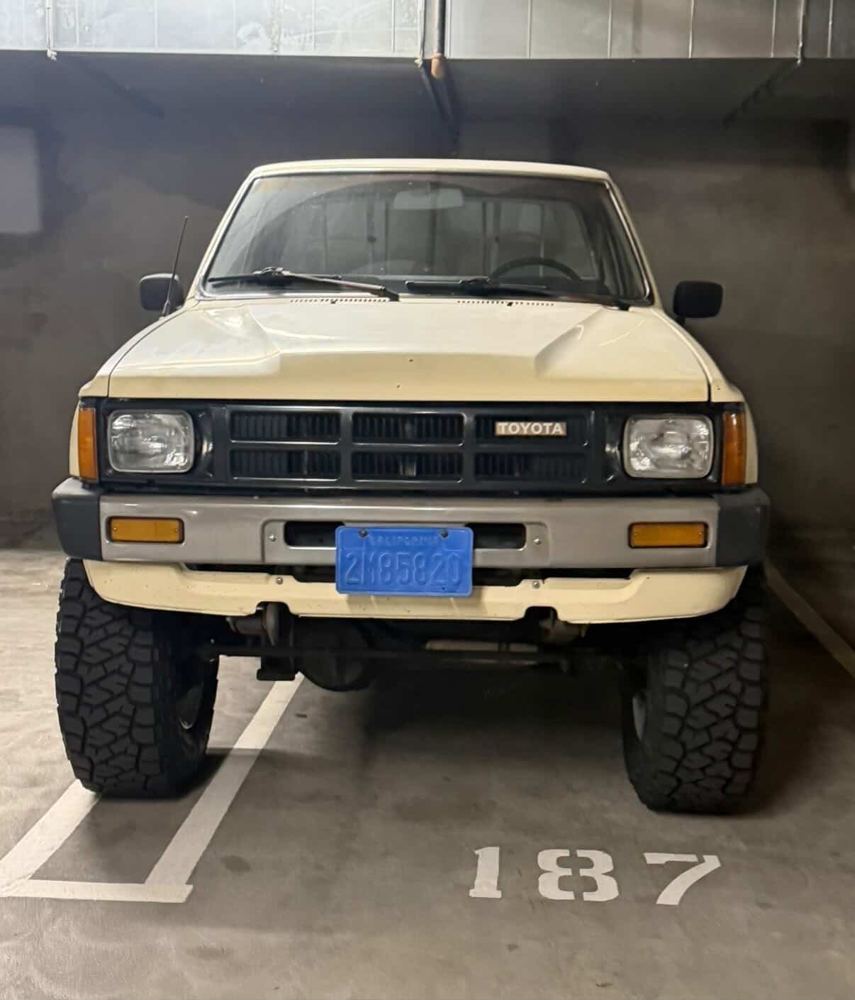
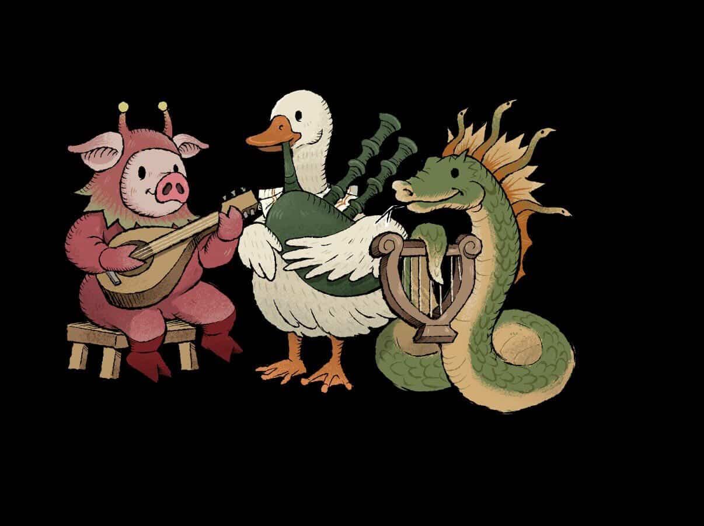
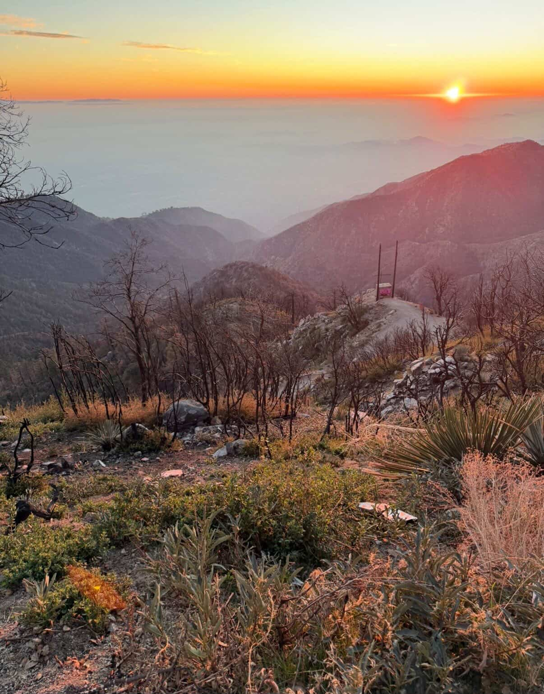

I started at a different college, the University of Arizona. After a while, I realized I didn’t want to attend a traditional university because I had a background in illustration and science, and I wanted something more focused on art.Also, my fiancé lived in California, so I thought it might be a good idea to look for an art school there. My parents didn’t let me apply to ArtCenter when I first graduated from high school because there were no dorms or student housing. They didn’t want to pay for an apartment. But since I had already spent a year in college living in dorms, they said it would be okay. That’s how I ended up at ArtCenter.I applied to the First-Year Immersion program. It was the first year the school offered it, so I thought it sounded interesting.
There were other schools, but I didn’t really look into them. When I first started applying to colleges, I had already found ArtCenter and really liked it. I thought it looked cool and was located in a beautiful part of California. Looking back, I kind of wish I had explored more options, but it worked out.

I haven’t visited many museums besides the ones we went to for school field trips. However, one place I visited on my own and really liked was the Petersen Automotive Museum. I enjoyed it because I like cars. Actually, I’m buying a new car tomorrow, so I’m pretty excited about that. It’s a Subaru WRX, but I’ll miss my current car, which is an Audi TT.I don’t usually enjoy museums because I find them a bit boring, but the Petersen Museum is great because it has so many interesting cars. Another place I liked was the Gamble House. I’m not sure if it’s technically a museum, but I really enjoyed visiting it.
There are a few classes that stand out. One was a ceramics class called “Ceramics on the Wheel” with Ari Bryce. I had no idea I would enjoy it so much, but I absolutely loved it. Even now, I still think about that class and want to continue doing ceramics. I’d love to have my own kiln and pottery wheel someday. Another memorable class was Prototype Process with Joseph, and another class with Roman. Those classes were impactful not only because of the projects but also because of the teachers. Joseph and Roman were two of the most encouraging and supportive teachers I’ve ever had. At ArtCenter, having a teacher who truly cares about students is incredibly important. They helped motivate me and encouraged me to do my best work.

Right now, I’m working on my graduation project. I’m also taking a game design class where we’re building a rhythm game similar to Guitar Hero. In our version, the controllers are animals that we fabricate. For example, there’s a snake controller where you squeeze its cheeks to make a hissing sound, and another controller shaped like a pig where flicking the tail creates a sound effect. We’re currently deciding on a name for the game. One of the names we considered was “Beastly Beats.” We’re planning to submit the project to game development competitions like IndieCade, which are well-known events for indie game developers. I’m also working on another project where I research a video game franchise and propose a reboot for one of its older games.
Yes. I used to be interested in working in the automotive industry, but I realized many automotive jobs in the United States are located in cities like Detroit or Milwaukee, and I don’t really want to live there. I’d rather live somewhere like Seattle.

If I get stuck on a project, I usually take a break and walk around. Taking breaks is really important because it helps reset my mind. Sometimes I’ll go out for lunch with my fiancé or take a short walk, and that helps me refocus when I return to work.
I also know the times of day when I work best.
For me, that’s usually in the middle of the day and again in the evening. Another thing is that I drink Coca-Cola or Red Bull because I don’t drink coffee.
My fiancé and I like going hiking when we have time. I also play a lot of video games. I enjoy horror games like Resident Evil and Silent Hill. Recently I’ve been playing Red Dead Redemption 2, although I’ve been playing it for years and still haven’t finished the story. I also enjoy driving around, working on my motorcycle, and spending time with my cat. I like reading as well. One of my favorite authors is Edgar Allan Poe. I enjoy poetry, short stories, and novels. Some of my favorite books are Pride and Prejudice and The Great Gatsby.
Definitely. I love video games, so I’d love to work in that industry. I want to help design things that are easier and more intuitive for people to use. I think it’s great if you can incorporate your hobbies into your career.
I’ve thought about that a lot, but honestly, I’m not sure. I was studying psychology before, which I do enjoy, but I don’t know what career path I would have taken. I think I would probably still do something creative, maybe something related to animals or nature. But in the end, I think everyone eventually finds their place in the world.